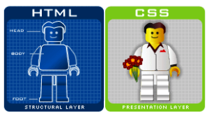

Embora o CSS (Cascading Style Sheets ou Folha de Estilos em Cascata), assim como o HTML, não seja uma linguagem de programação, um bom profissional da área de WebDesigner deve entender muito bem o que é CSS e como e quando ele é utilizado na elaboração das páginas Web. Vamos apresentar então um mini tutorial CSS.
O que é o CSS e por que ele existe?
O CSS é uma linguagem de folhas de estilos que é utilizada para definir como os documentos escritos na linguagem de marcação (HTML ou XML) devem ser apresentados em termos de formatação, de layout. Em um cenário ideal, enquanto o HTML é usado para estruturar os conteúdos, o CSS é utilizado para formatá-los. Dessa forma há uma enorme integração entre o HTML e o CSS.
No inicio da Internet, apenas o HTML era utilizado na elaboração das páginas Web, com o tempo e a necessidade de mais alternativas de formatação dessas páginas, foram criadas novas tags e atributos de estilo no HTML para que ele pudesse atender essas necessidades de layout, passando a cumprir tanto a função de estruturação quanto a de apresentação. Porém, isto começou a criar um problema para os Web Designers pois não havia como definir um padrão que se aplicasse a todas as páginas, qualquer alteração tinha que ser aplicada em cada uma delas, tornando o desenvolvimento muito complexo principalmente em grandes portais.

Para solucionar essas dificuldades foi criado o CSS, que passou a ser utilizado especificamente para definir a formatação de um documento e suas características de apresentação como cores, fontes, alinhamento e etc. O CSS também trouxe a possibilidade de compartilhamento do formato, aonde uma mesma definição de layout pode ser aplicada a várias páginas, aumentando a flexibilidade e reduzindo a repetição de código. O HTML volta então à sua função essencial, estruturar os conteúdos.
Principais Benefícios do CSS
Podemos então listar as seguintes grandes vantagens da aplicação do CSS:
Possibilidade do controle do layout de vários documentos a partir de um único arquivo CSS
Aplicação de layouts diferentes de acordo com o dispositivo utilizado, possibilitando o layout responsivo
Possibilidade de manter a mesma formatação em diferentes navegadores
Aplicação de técnicas mais sofisticadas de desenvolvimento
Menor consumo de banda e melhor desempenho devido ao reuso do mesmo código de formatação em várias páginas
Como o CSS é integrado com o HTML?
Há diferentes maneiras de aplicar a formatação do CSS dentro do HTML, vamos a alguns exemplos bem simples:
O Atributo Style
Nesse caso, é utilizado o atributo Style dentro da tag Body do HTML. Por exemplo:
A Tag Style
Aqui é utilizada tag CSS style para definição da formatação, não um atributo dentro da tag body.